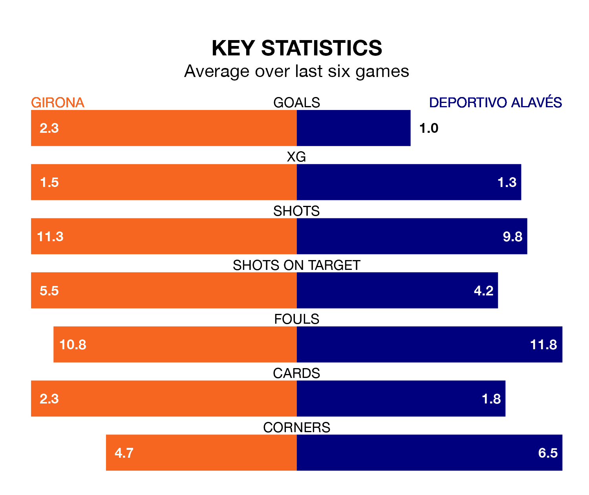

Girona are heavy favourites to keep all three points at home in Monday's late kick-off against Deportivo Alavés.
Girona, who sit second in La Liga with 16 games played, are priced at 1.6 to seal victory at Estadi Municipal de Montilivi.
Sitting 11 places and 25 points behind them in the table, Alavés are 5.2 to win with *Betting Company*, while the draw is at 3.8.
With 38 goals in 16 games so far this season, Girona are the league's joint-highest scorers with 2.4 goals per game. And they are conceding fewer than average, letting in 20 goals at a rate of 1.2 per game.
Alavés, meanwhile, are below average scorers, with 0.9 goals per game, compared to a league average of 1.3. They have conceded 1.2 goals per game.
The home side are in fantastic form in La Liga, with five wins and a draw from their last six games.
With two wins and a draw over that period, Depor's form is much worse – they have taken seven points from 18, compared to Girona's 16.
In the last 10 years, Girona and Alavés have played each other on 11 occasions. Girona won four of them, Alavés three, and they drew four times.
On average, Girona scored 1.5 goals and Deportivo Alavés 1.3 in those matches.
Their last meeting was on May 18 2019, when Alavés won 2-1 at home.
Girona's Sávio is the league's most creative player, racking up five assists in 16 appearances so far this season.
For Deportivo Alavés, Jon Guridi, Luis Rioja and Javier López Carballo have set up the most goals, having laid on three assists apiece to date.
Girona's last match was on December 10, a 4-2 win against FC Barcelona, with Artem Dovbyk, Cristhian Stuani, Miguel Gutiérrez and Valery Fernández getting the goals for Girona.
Alavés lost 1-0 against UD Las Palmas last time out, on December 9.
Monday's match will be refereed by Francisco José Hernández Maeso, who has taken charge of eight La Liga games so far this season, issuing one red card and booking 44 players. He has awarded two penalties.
The last Girona game Hernández Maeso refereed was a 1-1 away draw with Real Sociedad on August 12. He is yet to oversee a match featuring Alavés this season.
